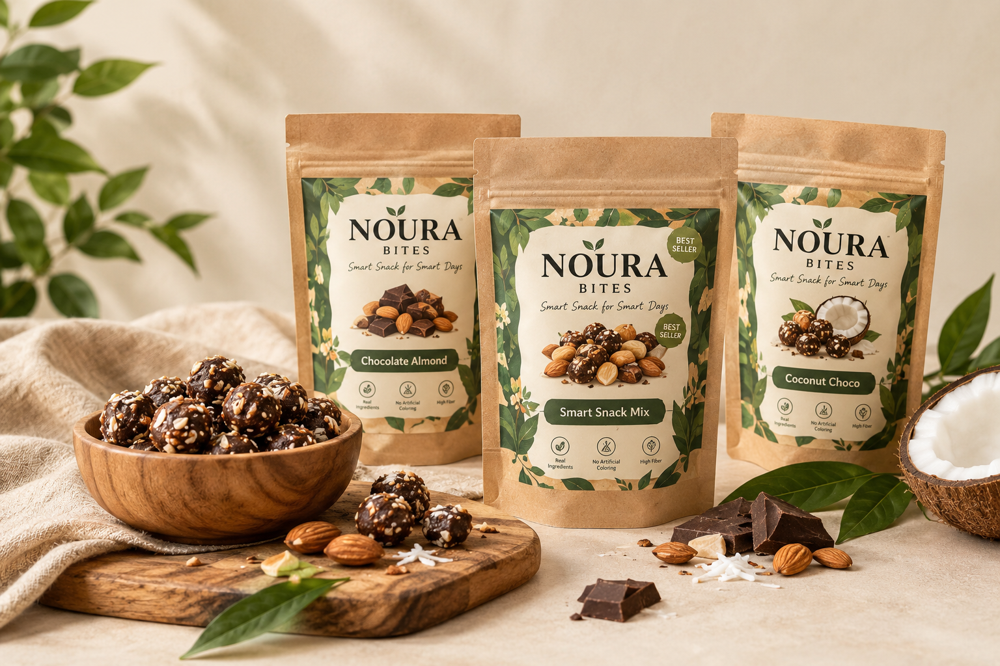

TENTANG NOURA BITES
Camilan Praktis, Temani Hari Produktif
NOURA Bites adalah brand camilan UMKM fiktif dengan perpaduan cokelat, almond, dan kelapa untuk menemani aktivitas sehari-hari.
Profil NOURA Bites

NOURA Bites hadir sebagai pilihan camilan praktis yang dapat menemani waktu belajar, bekerja, maupun bersantai.
Cerita Kami
NOURA Bites mengangkat perpaduan rasa cokelat, almond, dan kelapa dalam berbagai pilihan camilan. Kami ingin menghadirkan pilihan camilan yang praktis dan cocok dinikmati di sela-sela aktivitas sehari-hari.
Nilai yang Kami Bawa
Praktis: mudah dinikmati saat beraktivitas.
Beragam Rasa: pilihan camilan dengan perpaduan cokelat, almond, dan kelapa.
Teman Aktivitas: cocok menemani waktu belajar, bekerja, maupun bersantai.
Kenali Varian Favoritmu
Temukan pilihan camilan NOURA Bites yang sesuai dengan seleramu dan temani aktivitasmu setiap hari.
Lihat Produk